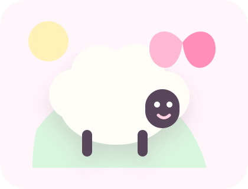
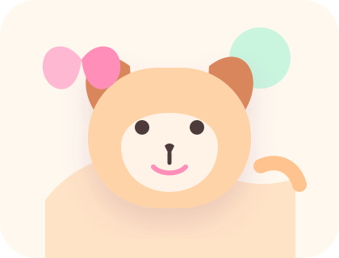
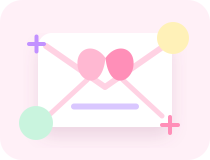
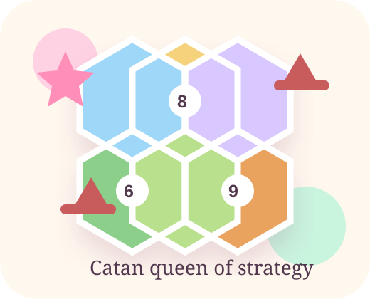
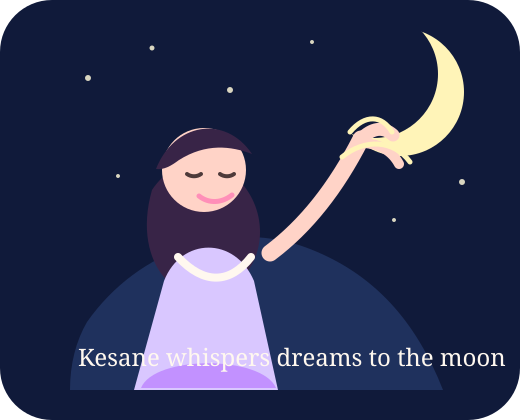

Future healer energy
Kesane studies medicine, which means her heart is already training to take care of people. This page believes that is the cutest kind of superpower.
A tiny website for a very special girl
A sweet little corner of the internet for the future doctor who loves gentle sheep, happy puppies, soft music, and a love story that feels like it belongs under fairy lights.
Reserved forever for Kesane
Kesane studies medicine, which means her heart is already training to take care of people. This page believes that is the cutest kind of superpower.
Built with pastel clouds, tiny paws, woolly sheep, and enough sweetness to make any ordinary day feel like a gentle surprise.
A wink to Taylor-style eras: romantic, brave, dreamy, and a little glittery. No lyrics needed, just the feeling.
Tiny relationship rule
Even on dramatic days, these words go straight into the cute little forbidden jar.
Mini game break
Tap the problems before they pile up. Every solved problem gives Kesane more brave future-doctor energy.
A pocket-sized picture book
A little illustrated gallery for the exact Kesane mood: medicine dreams, sheep softness, puppy happiness, and music floating around everything.

A woolly cloud friend for every study break.

Tail-wagging encouragement for her busiest days.
Because her future is smart, brave, and kind.
A little Swiftie sparkle drifting through the sky.
Medicine faculty princess
Between lectures, anatomy notes, practicals, exams, and long study nights, Kesane is becoming someone people will trust on their hardest days. That deserves its own standing ovation.
Serious study mode
A focused board-style quiz engine for high-yield review. The sample set is original and the structure is ready for licensed questions.
Choose a category and start the quiz when you are ready.

Special delivery
Dear Kesane, this page requested more cuteness, more pictures, and more sparkles. It is now trying very hard to become your favorite tiny corner of the internet.
Tiny friends department
Every cute website needs loyal assistants. These two are in charge of making Kesane smile.
A tiny sheep who specializes in emotional support, sleepy blinking, and making lecture notes 42% cuter.
A cheerful puppy assistant with a tail-wagging PhD in kisses, motivation, and "you can do it" energy.
Kesane's eras
Not lyrics, not copies, just little eras that feel like her: glowing, gentle, powerful, and impossible not to adore.
Soft smiles, pretty skies, and walking home with butterflies.
The version of Kesane that makes everything feel warmer.
Late notes, quiet focus, and a dream slowly becoming real.
The part where she is loved loudly, softly, and always.
Swiftie soundtrack corner
This uses the official Spotify embed, so the music stays on a licensed platform while the website still gets its Swiftie heart.

Board game champion
She does not just play Catan. She negotiates like a diplomat, builds like an architect, protects her longest road, and somehow makes every sheep trade feel adorable.

Only in moonlight mode
When the website becomes dark, Kesane gets her secret night scene: a soft little dream where a girl tells the moon about exams, music, puppies, tiny sheep, and all the brave things in her heart.
Tap for sweetness
Kesane, you are the kind of person who makes ordinary moments feel like they are wrapped in ribbon.